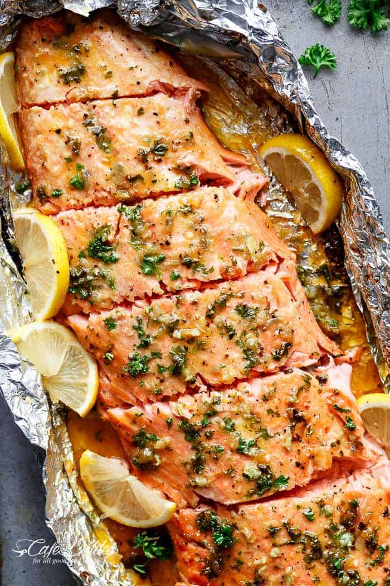

Home
Baked Honey Garlic Salmon

Ingredients
- 4 salmon fillets(about 6 oz each)
- 3 tablesppos honey
- 3 clovesgarlic, minced
- 2 tablespoossoy sauce
- 1 tablespoon olive juice
- 1 tablespoon lemon juice
- salt and pepper, to taste
- Optional garnish: chopped parsley or green onion
Instrctions
- preheat the oven to 400°;F(200°C)
- In a small bowl, mix together honey, mincedgarlic, soy sauce, olive oil, and lemone juice
- Place the salmon fillets im a baking dish lined with parchment paper or foil.
- Season the with salt and peppe.
- pour the honey garlic sauce evenly over the salmon fillets.
- Bake uncovered for 12-15 minutes or until salmon flakes easily with a fork.
- optional: Broil for 1-2 minutes at the end to carameliza the sauce slightly ( watch carefully to prevent burning)
- Garnish with chopped parsley or grren onions and serve hot.